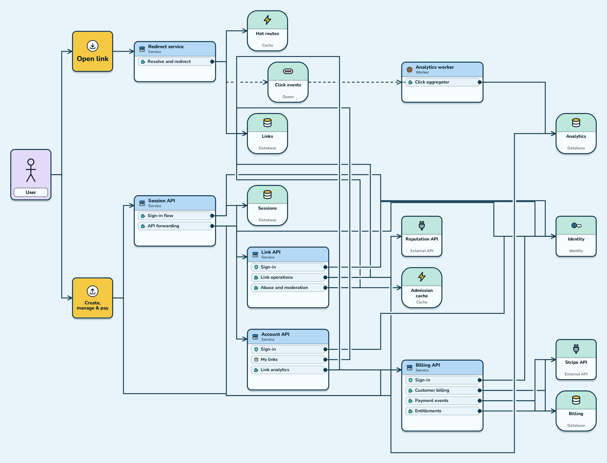

Versions · arm A
Arm A: QRWTY with Jeeves
A drew QRWTY's backend as a Jeeves diagram, let Jeeves's frozen generator export it, and wrote product code only in the stub files the export leaves for it. A never edited a generated file: each thing the templates couldn't do became a recorded gap for Jeeves. A stopped after one hand-written slice, guest link creation, and one live deploy.
- Generated backend lines (G0)
- 2,926
- Kept after the slice (R)
- 2,925
- Written by hand (C)
- 720, then 770
- Template share
- 80.25%, then 79.16%
- Stubs written
- 1 of 11
- Gaps found for Jeeves
- 17 (AG-01 to AG-17)
Backend source only, counted by the committed source-loc-v2 runner (comments, blank lines, tests and configuration left out). "Then" is the count after the live deploy, which added a Web Risk credential (AG-13's workaround). The share covers only the guest-link slice: the other ten stubs were never written, and each would lower it.
The diagram: revision 83, then 84
Revision 83 (Q01, 2026-11-14) saved the backend as 16 tiles, 27 links and 14 modules: three come from the Sign-in template and eleven are stubs to write. Revision 84 (Q05, 2026-11-15) changed one setting: the Click events queue runs on Google Cloud Pub/Sub instead of the default broker. The canvas draws no tile's provider, so the two Detailed pictures are byte-identical (gap AG-08).



What Jeeves generated
Jeeves at 4e87f97 exported revision 84 untouched: 64 generated files that build
and start healthy, with every product route answering 501 until its stub is written. Its backend
source, by part:
| Part | Files | Lines |
|---|---|---|
Runtime (src/runtime/): HTTP server and admission, process lifecycle, PostgreSQL, Valkey, Pub/Sub publishing and loops, clients for other tiles, External APIs and the identity provider, token checks | 14 | 2,104 |
Six processes (src/processes/): Session API, Link API, Redirect service, Account API, Billing API, Analytics worker | 6 | 546 |
Module wiring (src/modules/): one slots file per stub, the entry and its dependencies | 13 | 171 |
Service resources (src/features/; no process imports it) | 1 | 50 |
| Stub bodies, one per module to write | 11 | 55 |
| Generated backend (G0) = 2,871 scaffolding + 55 stub bodies | 45 | 2,926 |
Also generated, and not counted as backend source: Compose files and the Dockerfile, the setup scripts (migrations, roles and grants, Pub/Sub setup; 868 lines), and one SQL file per module for its product schema.
The one slice written by hand (Q06)
Guest link creation in Link API: POST /modules/link-api-link-operations/links,
the internal route Session API was to forward POST /api/v1/links to. It validates and
normalizes the destination, replays a repeated request or answers 409 before any other work,
checks Google Web Risk (422 for a bad link, 503 with Retry-After when Web Risk can't
answer), allocates a random slug with bounded retries, and never reports a database error as a
success. A guest gets a claim proof whose hash alone is stored, for 24 hours.
File (app/src/modules/link-api/) | Lines |
|---|---|
link-operations/create.ts: the create flow | 223 |
link-operations/destination.ts: destination rules and normalization | 126 |
link-operations/store.ts: calls into the product SQL | 84 |
link-operations/service.ts: settings and wiring | 65 |
link-operations/slug.ts: random slugs | 54 |
link-operations/reputation.ts: the Web Risk client | 53 |
link-operations/replay-seal.ts: the sealed replay copy (AES-256-GCM) | 52 |
link-operations/contract.ts: request and answer shapes | 36 |
link-operations/idempotency.ts: idempotency keys | 24 |
link-api-link-operations.ts: the stub body (3 lines added, its throw removed) | 3 |
| Written TypeScript (C) | 720 |
Beside it: 286 lines of product SQL (tables, triggers and one function per multi-row change, because the generated client has no transaction API) and, at A's last commit, 1,867 lines of tests. The live deploy later added 50 lines for a Web Risk credential from the service account. Never written: sign-in and API forwarding (Session API), the redirect, my links and link analytics (Account API), the click aggregator, three billing modules and abuse moderation.
The live deploy (Q13)
On 2026-11-15, for about an hour and a half, the generated app ran on Cloud Run (five services, a worker pool and a migration job) with Cloud SQL, two Memorystore Valkey instances and Pub/Sub, all reached over verified TLS. Probes checked migrations, TLS, Pub/Sub publishing and dead letters, Auth0 token checks, ingress, and a rollout under 1,501 requests with none failed. Guest creation from inside the deployment answered 201, and Web Risk's test URLs 422. It was then torn down; the spend, computed from resource lifetimes at list prices, was about USD 0.23. qrwty.io never routed to it.
Open the deploy record, every probe with its request and answer.
Gaps A found, and Jeeves's fixes
A's frozen export predates every fix below, so none of them is in A's code.
| Gap | Found | Severity | What was missing | Jeeves |
|---|---|---|---|---|
| AG-01 | Q04 | Low | Configuration was checked one client at a time, between probes | QG31 4b568a7 |
| AG-02 | Q04 | Medium | The require-TLS switch accepted Node's verification override | QG30 ba520b5 |
| AG-03 | Q04 | Medium | Credentials read from one directory only | QG34 fa78baf |
| AG-04 | Q04 | Medium | The cache client can't use a managed cache's token authentication | Known limit, recorded by QG33 7ce10f5 |
| AG-05 | Q04 | Low | Pub/Sub names compiled from the design | Known limit, recorded by QG33 7ce10f5 |
| AG-06 | Q04 | Low | Migrations set up the local identity provider's database even with a managed one | Known limit, recorded by QG33 7ce10f5 |
| AG-07 | Q04 | Low (docs) | A README row named the wrong variable | QG26 51f6639 |
| AG-08 | Q05 | Low | A queue's provider isn't drawn | No unit: the canvas draws no tile's provider |
| AG-09 | Q05 | Low | Two generated files ended with a blank line | QG32 00122f3 |
| AG-10 | Q06 | Medium | A stub has no startup step or declared settings | Not yet |
| AG-11 | Q06 | Low | Product SQL has no versioned steps | Not yet |
| AG-12 | Q06 | Low | A module schema can't grant less than full table access | Not yet |
| AG-13 | Q13 | Medium | No workload identity for an External API | Not yet |
| AG-14 | Q13 | Medium | Calls between tiles carry no ID token, so Cloud Run IAM can't protect a called service | Not yet |
| AG-15 | Q13 | Medium | /healthz is reserved by Cloud Run's front end | Not yet |
| AG-16 | Q13 | Medium | No regional Pub/Sub endpoint | Not yet |
| AG-17 | Q13 | Low | No log line on shutdown, drain or exit | Not yet |
"Not yet" gaps wait for a briefs unit, now that Jeeves's batch-3 review (QGR3) is done. Before A's freeze, Jeeves had already landed 17 QG units, from A's first audit (Q03) and the reviews of it and of batch 1. After the freeze came QG21–QG23 and QG25–QG27 (review findings), then batch 3, QG28–QG34 (the gaps above and the batch-2 review).